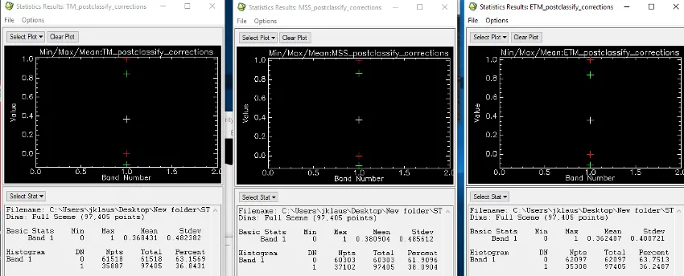

UCLA coursework, 2014 to 2018
Water Resource Analysis: Lake Change Detection of the Tibetan Plateau
This project accentuates one of Remote Sensing's most important facets: Change Detection Mapping. More specifically, a water resource analysis of lake change detection. The ROI is the Tibetan Plateau - one of the world's most vulnerable areas to global change. There is a pronounced temperature rise of 0.16°C every decade. It's clear the Tibetan lakes are experiencing alternations in their distribution and inundation area; however, the Tibetan Plateau's inhospitable environment and general lack of accessibility have left lake dynamics shrouded in mystery.
Landsat imagery taken over the course of 25 years were used to map and detect multi-decadal changes of a particular lake in the Tibetan Plateau: Dawa Co. This small, saline lake is approximately 115km and located in the heart of the Tibetan Plateau. A much smaller satellite lake (roughly 8km) is viewable East of Dawa Co. A series of images were acquired during the same season by 3 different Landsat sensors: Landsat MSS (1976), Landsat TM (1990), and Landsat ETM+ (2000).
Preparing the Image:
A Region of Interest (ROI) was created around the Dawa Co. and satellite lake. The Landsat MSS image was subset using the ROI and acted as our base of reference - a template of sorts for later subsetting the Landsat TM and Landsat ETM+ images. Aggregating and Subsetting the Landsat TM and Landsat ETM+ images were essentially for performing lake change detection. Landsat TM and ETM+ images need resampling because their images are a much finer resolution than Landsat MSS. To compromise with the much coarser spatial resolution of the Landsat MSS image, the pixel sizes of Landsat TM and ETM+ were resized and resampled to match the pixel size of the Landsat MSS image.
Because these varying sensors offer different perspectives of the ROI, adjustments in band ratios need to be performed. For instance, both Landsat MSS and Landsat ETM+ images showcase the Northern 1/3rd of the satellite lake very light in color. This is due to the sensors picking up high amounts of salt sediment on the bottom of the lake. The Landsat ETM+ image, on the other hand, shows little of this salty bottom. Band Ratio Adjustment is performed to reduce this bottom effect using the following formula: (b1x100/(b2+1)). The variable b1 in the formula is defined as Band 4, and b2 is ascribed to Band 3. This readjustment was performed for all Landsat sensors.
At the heart of this Lake Change Detection project was defining the Spectral Threshold for water. The lakes from the surrounding land mass in the ratio image were extracted, and histograms were created for the ratio Landsat TM, MSS, and ETM+ images. These histograms helped define the data value threshold break between water and land for the images. The Estimated Threshold Breaks for the sensors were as followed: - Landsat TM: 61 - Landsat MSS: 54 - Landsat ETM+: 64
Change Detection is visually represented through a classification scheme - operations achieved through 'Color Mapping' and 'Density Slicing.' The original range was deleted, and new ranges were added that span from 0 to the Threshold Value of the image. Post-Classification Corrections were also performed on the image, due to lake area's containing isolated pixels ('speckle'). These were removed.
Once the images were corrected, they were combined together into one composite RGB image. This allows for an easy visualization of the change detection between each image. - Landsat MSS image was set to 'R' - Landsat TM image was set to 'G' - Landsat ETM+ image was set to 'B'
A Linear Stretch was applied to the stacked image for a proper representation - at first the image displays as black. Statistics and Histograms are calculated for each of the three final classifications.
Change Detection Mapping

The colors illustrated in the RGB composite image above showcase the change in the lakes' size throughout the years (1976, 1990, and 2000). The lakes' extent in the first year (1976) is denoted by the Red coloring (Landsat MSS - R:1, G:0, B:0). The lakes' extent in the second year (1990) is denoted by the Yellow coloring (Landsat TM - R:1, G:1, B:0). The lakes' extent in the final year (2000) is denoted by the White coloring (Landsat ETM+ : R:1, G:1, B:1).
The value of "1" changes in accordance to which layer is placed on top of one another. This is why the lakes' extent in the most recent year (2000) has a value of "1" for the three RGB Bands.
Through Change Detection Mapping, we can deduce that Dawa Co. and its surrounding satellite lake are experiencing different directions of change - in fact, they're inverses of each other. Dawa Co. is decreasing in size, while the satellite lake is increasing. This difference in size is illustrated by which colors are categorized by the value “1” for RBG. The unanimous RBG value of "1" (R:1, G:1, B:1) for the satellite lake solidifies its increasing size. The furthest extent is represented by the Dark Blue area, with values of R:0, G:0, B:1. The middle extent is categorized by the Light Blue area, with values of R:0, G:1, B:1. The shortest extent is denoted by the White area, with values of R:1, G:1, B:1.
The dark blue area denotes the furthest extent, its value being R:0, G:0, B:1. The value categorized as B, ETM+, denotes the most recent image of the lake in year 2000. The light blue area denotes the middle extent of the lake, and its size is determined by the TM 1990 image (its value being R:0, G:1, B:1). The satellite lake’s smallest white extent is categorized with the RGB value: R: 1, G:1, B:1. This indicates that the extent was observed by the 3 satellite images listed above (TM, MSS, ETM+). Based on the values of these bands, the direction of the size appears to be increasing.
Statistics

The statistics above help understand Lake Pixel Area Change over the 25-year duration. This change was calculated between the 1976 - 1990 images and between the 1990 - 2000 images. The Landsat MSS (1976) image had a Npts of 37,102. Landsat TM (1990) has a Npts of 35,887. The difference between these values allows for a total Lake Pixel Area Change of 1,215 over the course of 1976 to 1990. Subtracting Landsat TM's (1990) Npts of 35,887 with Landsat ETM+ (2000) Npts of 35,308 gave us the final Lake Pixel Area Change of 579. This lower Pixel Change makes sense, since the timeframe between the Landsat TM and Landsat ETM+ images are less than the 1976 - 1990 timeframe.